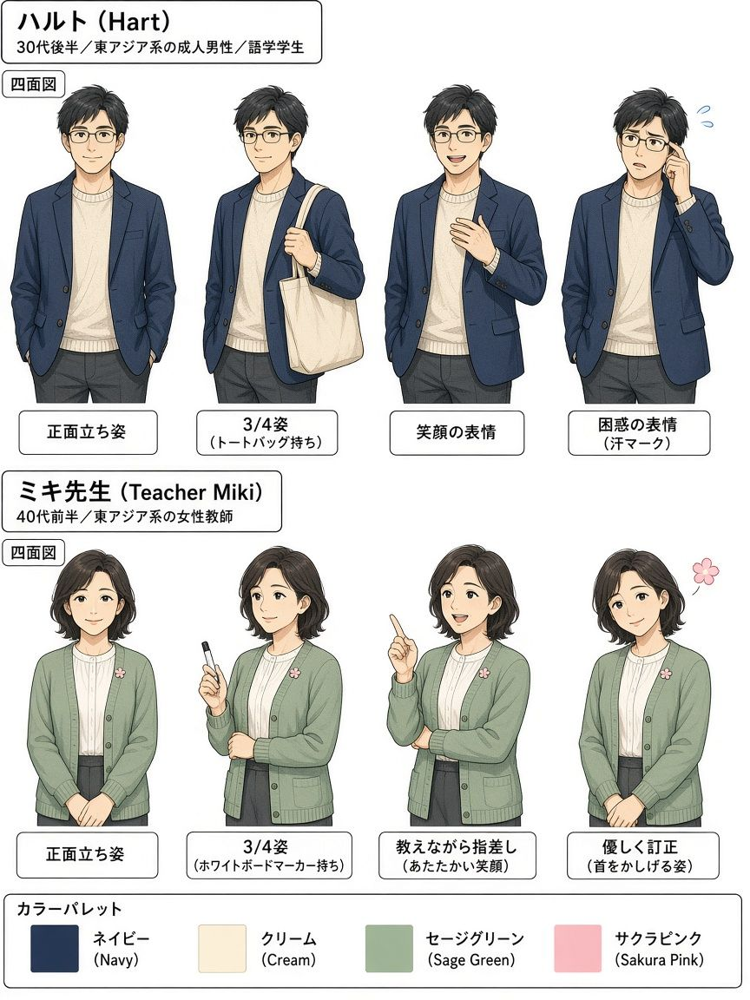
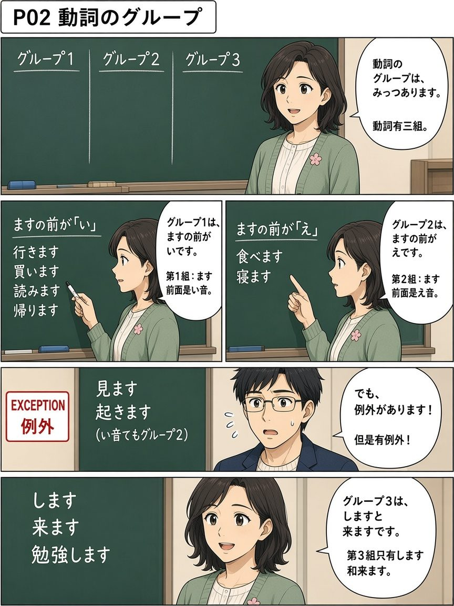
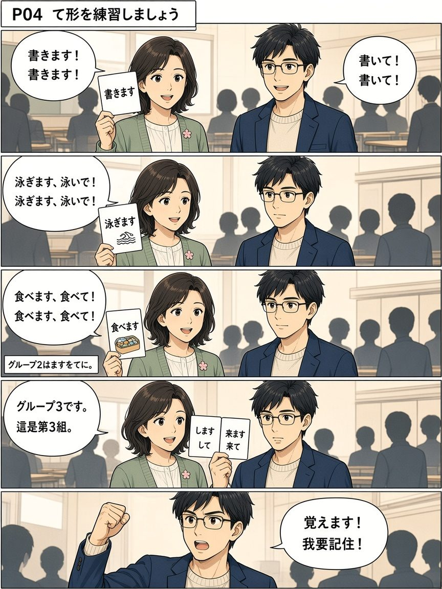
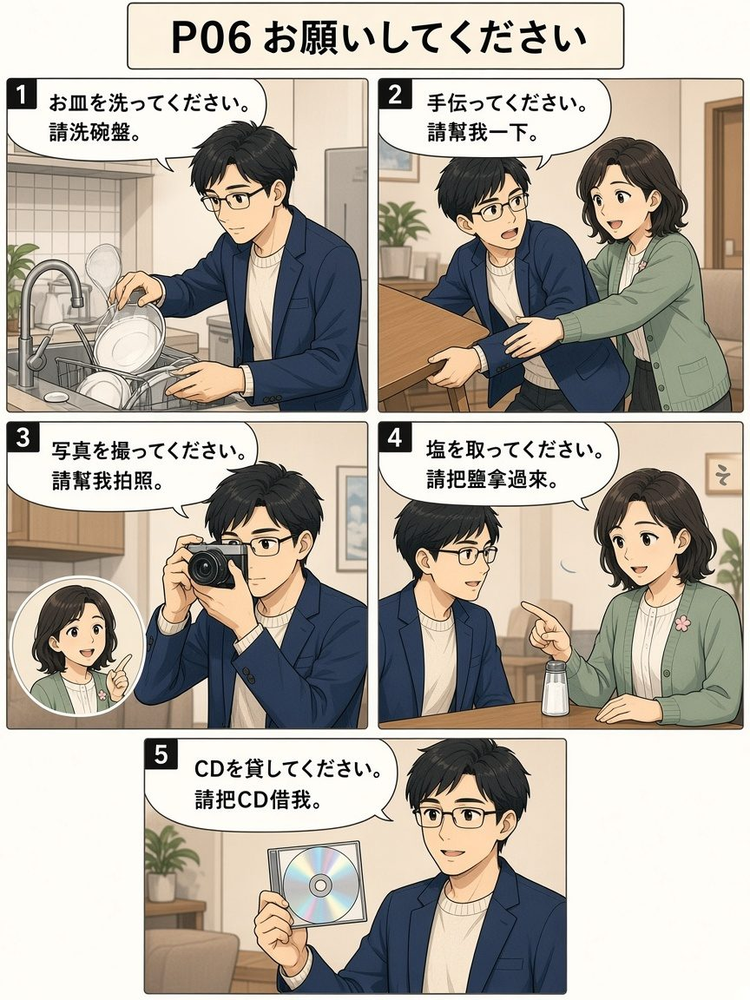
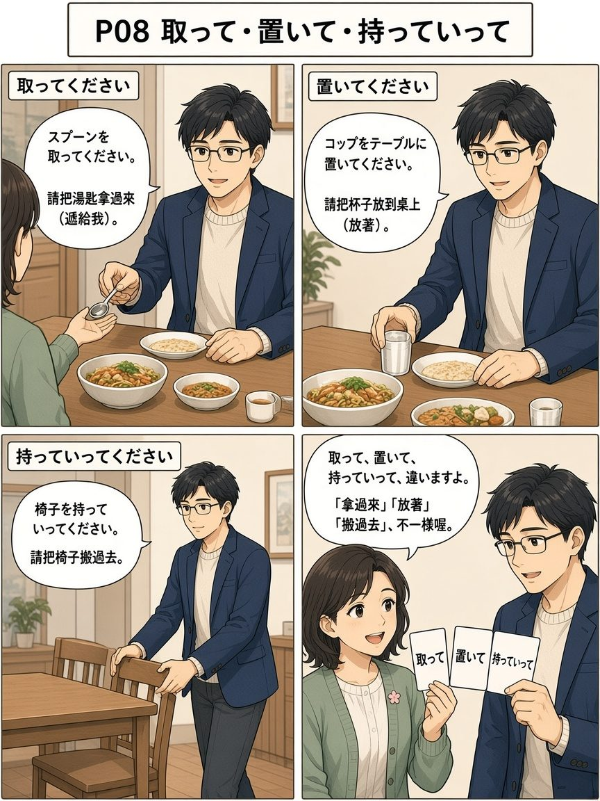
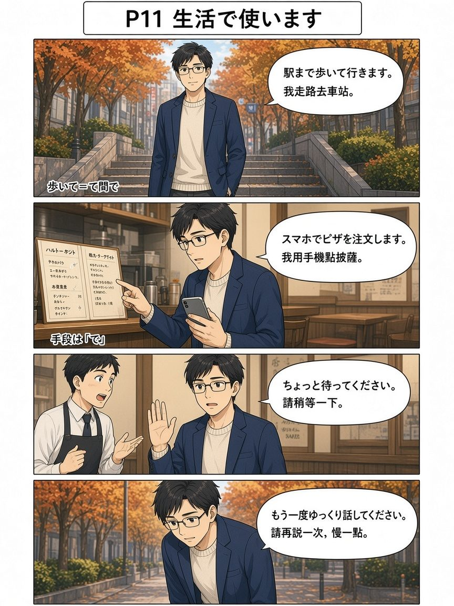
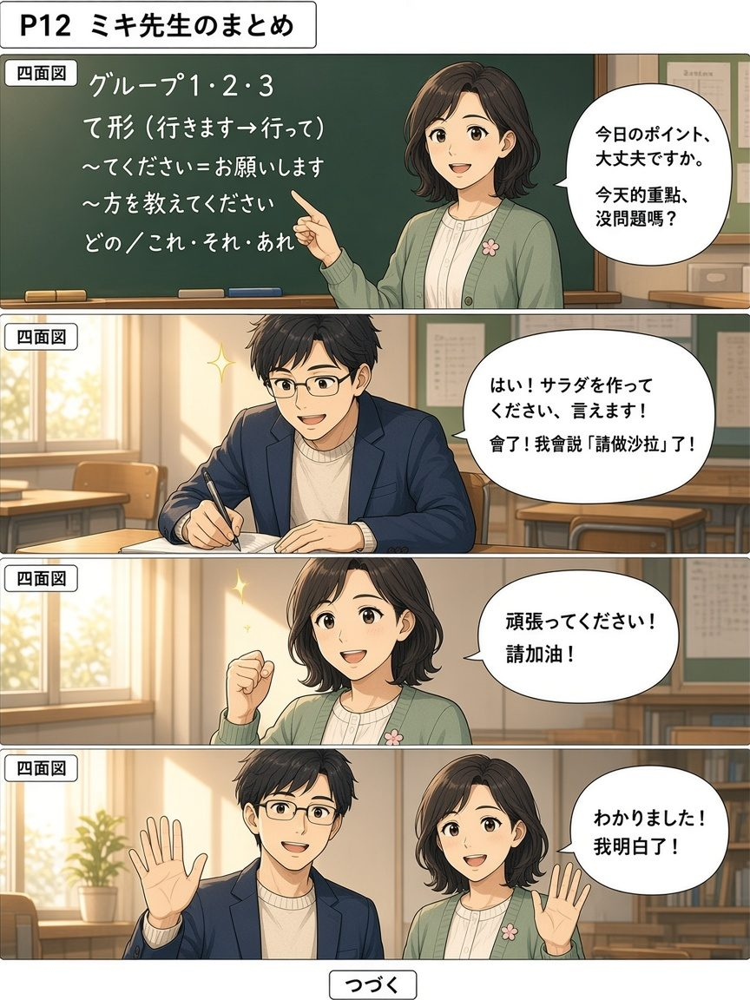

📖 11/09 漫畫版「て形・てください」
全 12 頁日漫複習（baoyu-comic --art manga --tone warm）。主角ハルト（約 37 歲、住神樂坂的語言學校新生，虛構）在課堂學會動詞分組和て形，再到朋友家幫忙準備派對，練習 〜てください、〜方を教えてください 和 どの／これそれあれ；最後ミキ先生總結。氣泡文字可能糊掉或有錯字，請一律以圖下日語列為準（▶ 播放／⧉ 複製）。
角色設定（一致性）

ハルト：東京・神樂坂附近的成人語言學校學生（晚 30 歲、眼鏡、海軍藍外套）。頁面上不使用任何真實姓名／肖像。
ミキ先生：溫柔的語言學校老師（鼠尾草綠開襟衫、櫻花徽章）。
友だち：通用朋友／店員（無名牌真實姓名）。
畫風：日漫 clean ink、screentone、速度線、表情符號、日語氣泡＋中文對照。
圖上小錯誤備註（請以圖下日語列為準）： P01「さて」被畫成「させて」； P04 前幾格氣泡把日語寫了兩遍、沒有中文； P05 第4格ハルト穿成綠開襟衫（角色衣服對調），「丁寧」氣泡把「作ってください」和「お願いしますです」寫在一起； P09 圖上是「すみません、作り方を…」，完整句應加「が」：すみませんが； P10「それです」的中文被寫成「是這個」（應為「是那個」），調味瓶有兩瓶都標「塩」； P11 註記「歩いて＝て間で」應為「て形で手段」，菜單小字亂碼請忽略； P12 每格左上角多了「四面図」標記，請忽略。
12 頁目錄
P01 今日のポイント
今日のポイント

課堂開始，宣布今天重點是て形和〜てください。
P02 動詞のグループ
動詞のグループ

三組動詞：ますの前が い／え；例外；しますと来ます。
P03 グループ1のて形
グループ1のて形

第1組て形口訣；行きます→行って。
P04 て形を練習しましょう
て形を練習しましょう

課堂練ます形→て形。
P05 サラダを作ってください
サラダを作ってください

派對準備；て是隨便，てください是禮貌。
P06 お願いしてください
お願いしてください

各種拜託句。
P07 に・で・から
に・で・から

目的地に、工具で、從哪裡から。
P08 取って・置いて・持っていって
取って・置いて・持っていって

三個容易混的動作。
P09 作り方を教えてください
作り方を教えてください

不會時請人教；自己也不會就請對方去問。
P10 どのお皿ですか
どのお皿ですか

どの＋名詞；どれ／それ。
P11 生活で使います
生活で使います

走路、用手機點餐、請對方說慢一點。
P12 ミキ先生のまとめ
ミキ先生のまとめ

老師總結；請加油。